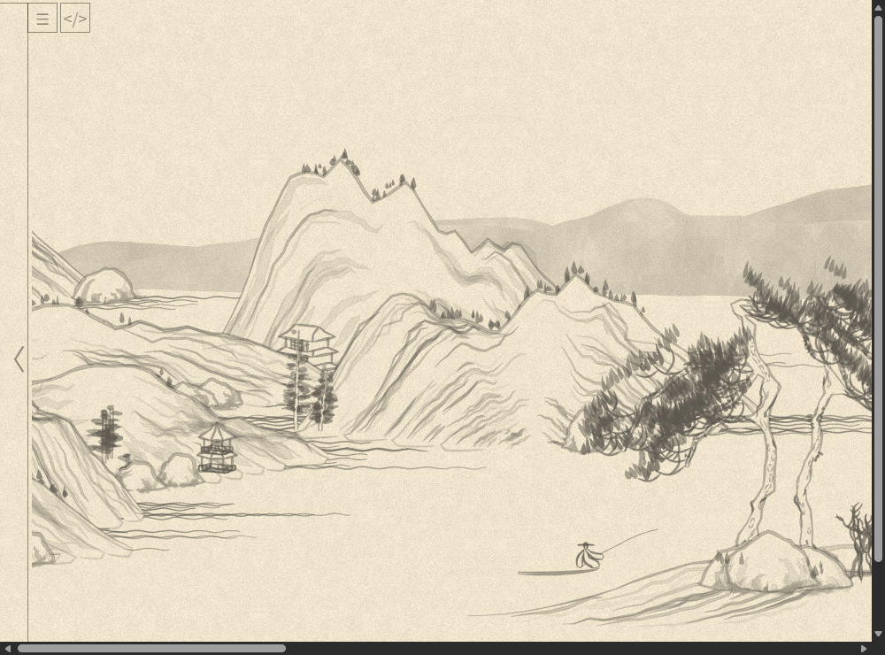
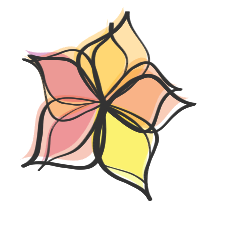
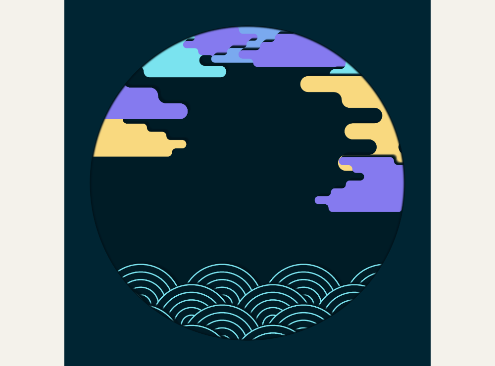
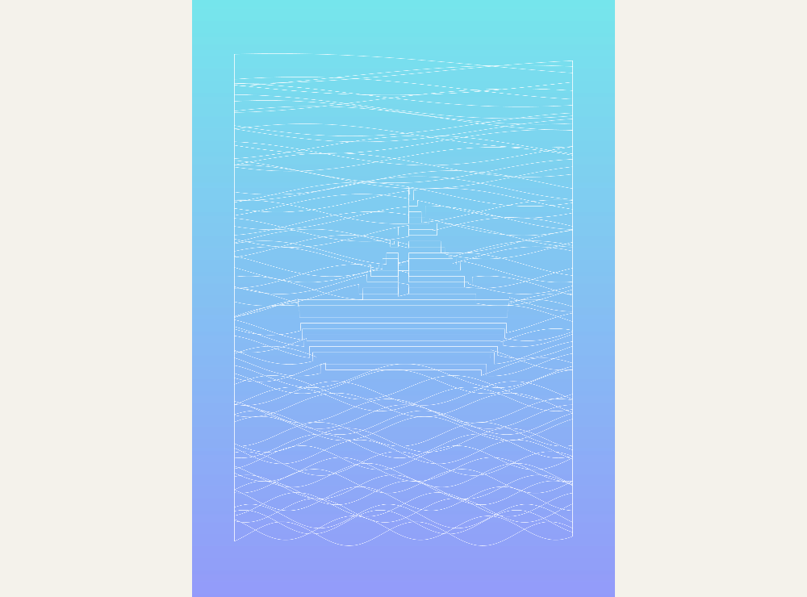
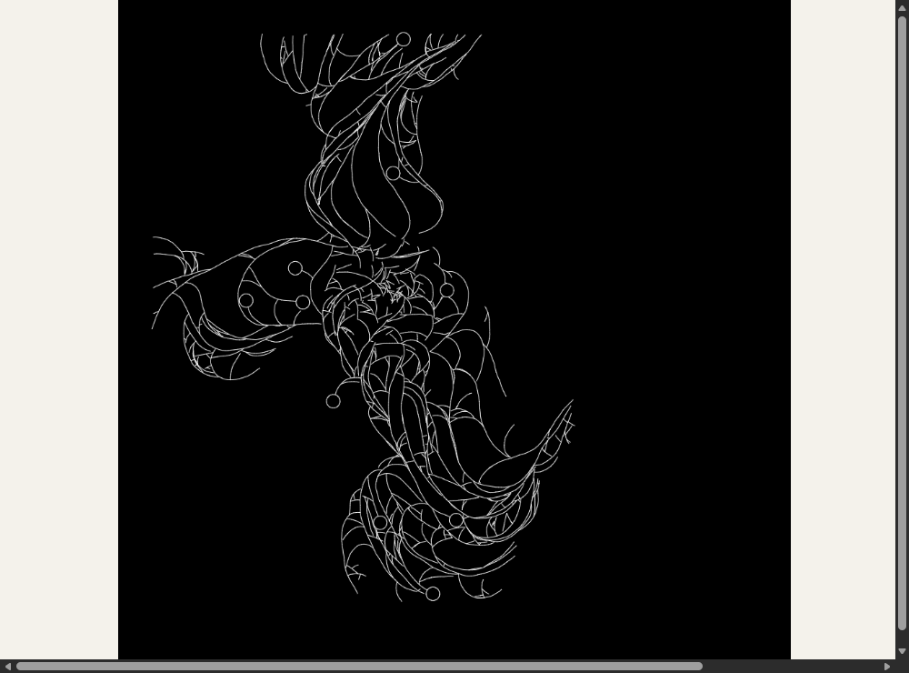
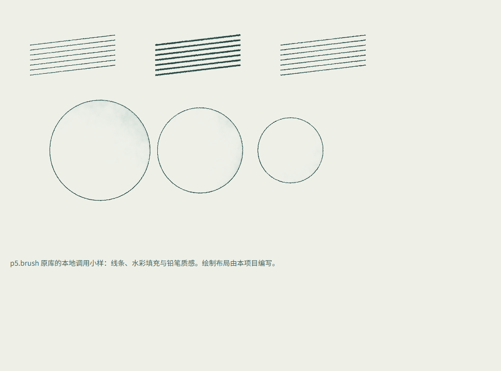
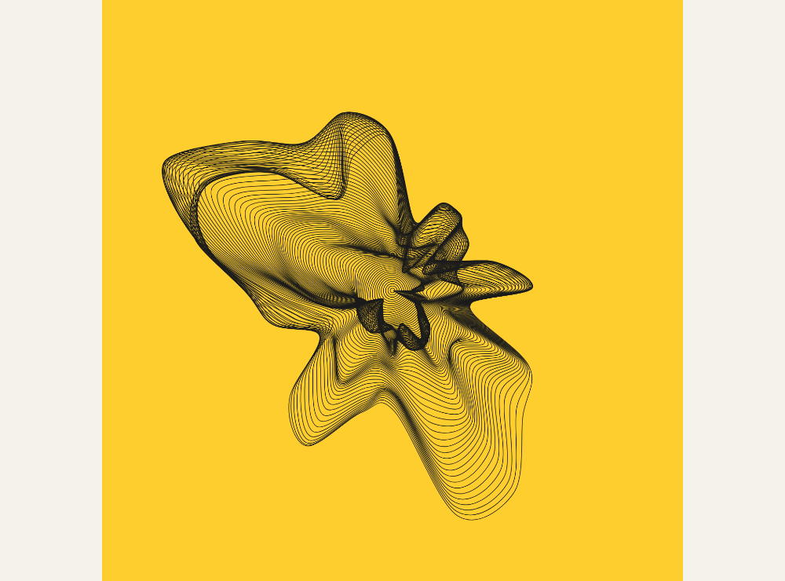
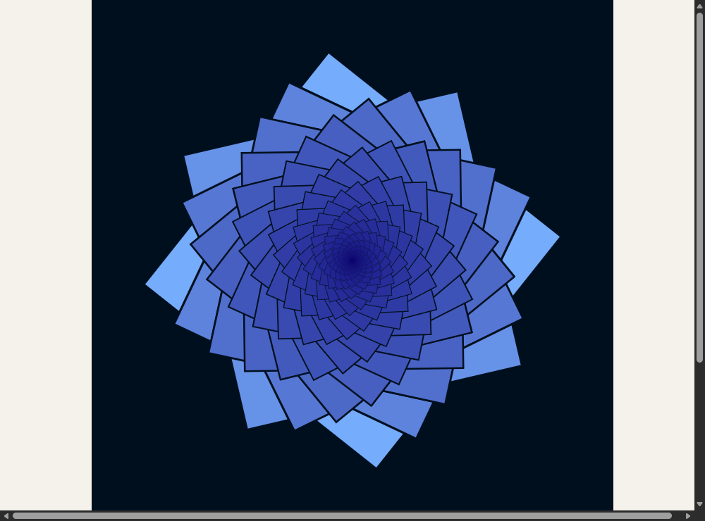

花瓣轮廓
通过两段贝塞尔曲线生成不完全对称的花瓣。可以研究花瓣数量、长宽和轮廓变化；尚未区分具体花种。预览图截取左上区域。
SOURCE STUDIES · 02
这批样例已保存在本机，补齐运行依赖并用浏览器试跑。点击「本地运行」即可观看，不需要账户、下载或安装。
山水、Fresco 和花瓣保留原作绘画代码与默认风格，仅调整本地启动入口。笔触小样是对 p5.brush 原库的新调用。截图是本机实际运行结果；完整来源和许可在记录中。








形态先看山水项目的树、石、舟与亭，以及花瓣生成；云和水波可试 Fresco 的装饰路线。鸟群已有上一轮的 NOC 完整示例。选定基础画风后，再验证笔触库能否让这些形态看起来属于同一幅画。